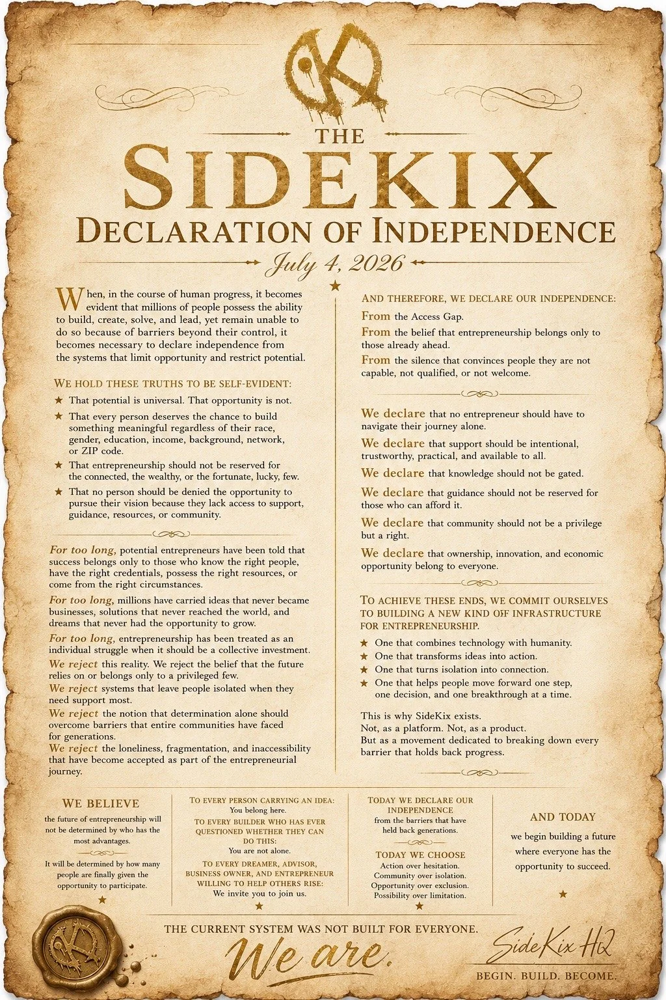

There is Another Way.
Written for anyone who has decided to stop waiting for permission. Read it, and if it says what you would have said, put your name to it.

When, in the course of human progress, it becomes evident that millions of people possess the ability to build, create, solve, and lead, yet remain unable to do so because of barriers beyond their control, it becomes necessary to declare independence from the systems that limit opportunity and restrict potential.
We hold these truths to be self-evident:
- That potential is universal. That opportunity is not.
- That every person deserves the chance to build something meaningful regardless of their race, gender, education, income, background, network, or ZIP code.
- That entrepreneurship should not be reserved for the connected, the wealthy, or the fortunate, lucky, few.
- That no person should be denied the opportunity to pursue their vision because they lack access to support, guidance, resources, or community.
For too long, potential entrepreneurs have been told that success belongs only to those who know the right people, have the right credentials, possess the right resources, or come from the right circumstances.
For too long, millions have carried ideas that never became businesses, solutions that never reached the world, and dreams that never had the opportunity to grow.
For too long, entrepreneurship has been treated as an individual struggle when it should be a collective investment.
We reject this reality. We reject the belief that the future relies on or belongs only to a privileged few.
We reject systems that leave people isolated when they need support most.
We reject the notion that determination alone should overcome barriers that entire communities have faced for generations.
We reject the loneliness, fragmentation, and inaccessibility that have become accepted as part of the entrepreneurial journey.
And therefore, we declare our independence:
From the Access Gap.
From the belief that entrepreneurship belongs only to those already ahead.
From the silence that convinces people they are not capable, not qualified, or not welcome.
We declare that no entrepreneur should have to navigate their journey alone.
We declare that support should be intentional, trustworthy, practical, and available to all.
We declare that knowledge should not be gated.
We declare that guidance should not be reserved for those who can afford it.
We declare that community should not be a privilege but a right.
We declare that ownership, innovation, and economic opportunity belong to everyone.
To achieve these ends, we commit ourselves to building a new kind of infrastructure for entrepreneurship.
- One that combines technology with humanity.
- One that transforms ideas into action.
- One that turns isolation into connection.
- One that helps people move forward one step, one decision, and one breakthrough at a time.
This is why SideKix exists.
Not, as a platform. Not, as a product.
But as a movement dedicated to breaking down every barrier that holds back progress.
We believe
the future of entrepreneurship will not be determined by who has the most advantages.
It will be determined by how many people are finally given the opportunity to participate.
To every person carrying an idea
You belong here.
To every builder who has ever questioned whether they can do this
You are not alone.
To every dreamer, advisor, business owner, and entrepreneur willing to help others rise
We invite you to join us.
Today we declare our independence
from the barriers that have held back generations.
Today we choose
Action over hesitation.
Community over isolation.
Opportunity over exclusion.
Possibility over limitation.
And today
we begin building a future where everyone has the opportunity to succeed.
The current system was not built for everyone. We are.
Add your name